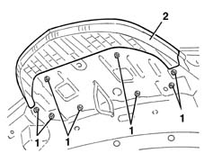

7055A40 radiator shield - r r
- Path
- Procedures > 70 FITTINGS > 7055 MOULDING AND PROTECTION > 7055A exterior mouldings > 7055A40 radiator shield - r r
- Kind
- repair procedure (removal / refitting; the operation number is the code)
- Applies to
- all engines; all production periods
- Interactive page
- https://sloeber94.github.io/elrnDB-lYpsln/en/#/2429672
Applies to: all engines; all production periods
 Removing
Removing
 Refitting
RefittingOpen the bonnet lid.
1. Unscrew the nuts.
2. Remove the shield.

Applies to: all engines; all production periods
If necessary, 7055A84 front ornament - r r .
Applies to: all engines; all production periods
Refitting
RemovingCheck that the radiator badge is not damaged.
Position the shield and secure it using the bolts.